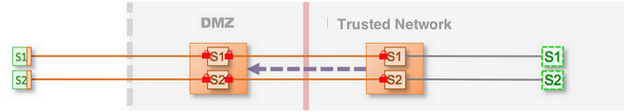
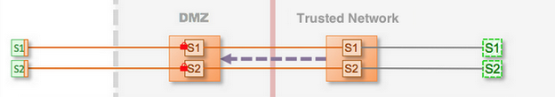

Enterprise Shield™ Use Cases
This topic provides a high-level overview of some common Enterprise Shield™ use cases.
Before You Begin
This procedure is part of Configure Enterprise Shield for Kaazing Gateway:
- Common Kaazing Gateway Production Topologies
- About Enterprise Shield
- Enterprise Shield Use Cases
- Setting Up the Gateway
- Walkthrough: Configure Enterprise Shield
- Walkthrough: Configure Enterprise Shield for High Availability
The use case configurations described in this topic vary depending on the level of security and high availability you want to configure. Also, the sample topologies use two Gateway services instead of just one to demonstrate the Enterprise Shield reverse connectivity behavior in a configuration with multiple services.
Each of the Enterprise Shield use cases configures Enterprise Shield on a single pair of Gateways (DMZ and internal Gateways), and then extends that topology to a cluster configuration. To configure Enterprise Shield and control Gateway operation, you configure elements in the Gateway configuration (gateway-config.xml) file. Also, the complete Gateway configuration files used for these use cases are available on Github. The configuration file names are included in each use case description that follows.
Use Case 1: Test Drive Enterprise Shield™
This is the simplest Enterprise Shield architecture for the purpose of prototyping and evaluating how this feature can meet your business needs. No security is configured, which reduces the complexity of setting up this architecture. Also, it is easy to demonstrate this configuration on a single host environment, such as a laptop.

Figure 1: Test Drive Enterprise Shield
The following complete configuration files are available on Github:
- Single pair of Gateways:
- Internal Gateway:
enterprise-shield-use-case-1-single-internal-gw.xml - DMZ Gateway:
enterprise-shield-use-case-1-single-dmz-gw.xml - Cluster of Gateways:
- Internal Gateway:
enterprise-shield-use-case-1-cluster-internal-gw.xml - DMZ Gateway:
enterprise-shield-use-case-1-cluster-dmz-gw.xml
Use Case 2: Security Over the Web
This use case is the same as use case 1, but with security added between the client and the DMZ Gateway. This topology demonstrates the architecture for secure communication over the Web that uses TLS between the client and the DMZ Gateway (represented by locks). A production deployment should always use security for connections over the Web. The communication in the data center is unsecure. Use this topology when you want secure Web communication, but network transport security is not a requirement between the DMZ and the trusted network.

Figure 2: Security Over the Web
This use case configures Enterprise Shield on a single pair of Gateways (DMZ and internal Gateways), then extends the topology to a cluster configuration. The following complete configuration files are available on Github:
- Single pair of Gateways:
- Internal Gateway:
enterprise-shield-use-case-2-single-internal-gw.xml - DMZ Gateway:
enterprise-shield-use-case-2-single-dmz-gw.xml - Cluster of Gateways:
- Internal Gateway:
enterprise-shield-use-case-2-cluster-internal-gw.xml - DMZ Gateway:
enterprise-shield-use-case-2-cluster-dmz-gw.xml
Use Case 3: Maximum (End-to-End) Transport Security
This topology provides the most secure connections into the enterprise. It is also a best practice recommendation for maximum security of an Enterprise Shield production configuration, because it provides security on the Web (same as Use Case 2) and it also secures the transport between the Gateways running on the DMZ and the trusted network. In this topology, the Gateway in the internal trusted network and a DMZ Gateway collaborate so that inbound ports of the firewall can be closed. Doing so provides a barrier to unauthorized users but still allows full bidirectional access.
Figure 3: Maximum (End-to-End) Transport Security
To configure this Enterprise Shield topology on a single pair of Gateways and then extend it to a cluster, follow the detailed steps in Walkthrough: Configure Enterprise Shield™ and see the complete configuration files at Github:
- Single pair of Gateways:
- Internal Gateway:
enterprise-shield-use-case-3-single-internal-gw.xml - DMZ Gateway:
enterprise-shield-use-case-3-single-dmz-gw.xml - Cluster of Gateways:
- Internal Gateway:
enterprise-shield-use-case-3-cluster-internal-gw.xml - DMZ Gateway:
enterprise-shield-use-case-3-cluster-dmz-gw.xml
Use Case 4: Using http.proxy with Enterprise Shield
The previous examples use the proxy service for configuring Enterprise Shield, but you can increase security using the http.proxy service. The http.proxy service includes properties and functionality for eliminating the public exposure of internal network and host information.
The following configuration files are available on Github:
- DMZ Gateway:
enterprise-shield-use-case-4-http-proxy-dmz-gw.xml - Internal Gateway:
enterprise-shield-use-case-4-http-proxy-inner-gw.xml